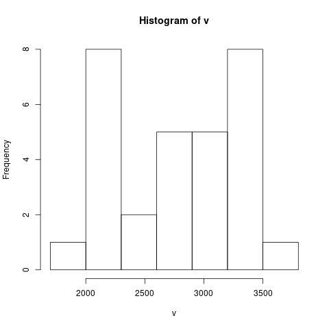

1章 記述統計
Table of Contents
#+include R-text-common.org
## 入門統計学1章1節
1 1章 データの整理
1.1 表1.2の読み込み
## ## 入門統計学1章 表1.2.csv ## (表1.2 <- read.csv("R-text/data/01-02.csv")) class(表1.2)
[1] "data.frame" ポット番号 栽培法A 栽培法B 1 1 3063 3157 2 2 2275 2707 3 3 2089 3270 4 4 2855 3181 5 5 2836 3633 6 6 3219 3404 7 7 2817 2219 8 8 2136 2730 9 9 2540 3408 10 10 2263 3203 11 11 2140 2938 12 12 1757 3286 13 13 2499 2920 14 14 2093 3332 15 15 2073 3478
1.2 度数分布表の作成
## ## v <- append(表1.2$栽培法A,表1.2$栽培法B) summary(v) table(cut(v, breaks=seq(1700,3800 ,300)))
Min. 1st Qu. Median Mean 3rd Qu. Max.
1757 2266 2846 2784 3215 3633
(1.7e+03,2e+03] (2e+03,2.3e+03] (2.3e+03,2.6e+03] (2.6e+03,2.9e+03]
1 8 2 5
(2.9e+03,3.2e+03] (3.2e+03,3.5e+03] (3.5e+03,3.8e+03]
5 8 1
1.3 ヒストグラムの表示
## ## v <- append(表1.2$栽培法A,表1.2$栽培法B) hist(v, breaks=seq(1700,3800 ,300))
